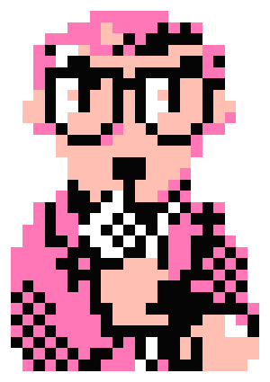

メンバー管理
前回受賞
1st
2nd
3rd
1stステージ
くじ引き
A
B
C
D
試合結果入力
試合スケジュールがここに表示されます
2ndステージ
くじ引き
A
B
C
D
試合結果入力
試合スケジュールがここに表示されます
3rdステージ
くじ引き
A
B
C
D
試合結果入力
試合スケジュールがここに表示されます
総合成績
NAME
1st
W-D-L
2nd
W-D-L
3rd
W-D-L
GOAL
MVP
参加者名A
3-1-0
2-0-2
1-2-1
150
150
設定
勝ち点設定
勝ち
分け
負け
ブースト適用設定
カントク：3倍
50歳以上：2倍
一般：1倍
MVPの計算に適用
得点王の計算に適用
データ管理
データを書き出す
データを読み込む
データを初期化
会計用
会計用QRコードを作成
リンクをコピー
メンバー編集
名前
生年月日
キャンセル
保存する
データの初期化
名簿の追加メンバー、試合結果を含む
すべてのデータを完全に消去します。
この操作は取り消せません。よろしいですか？
キャンセル
実行する